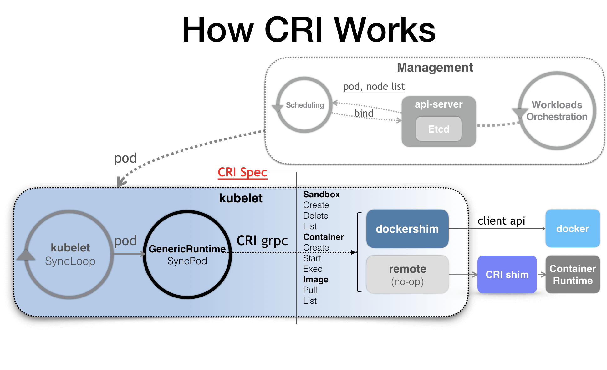
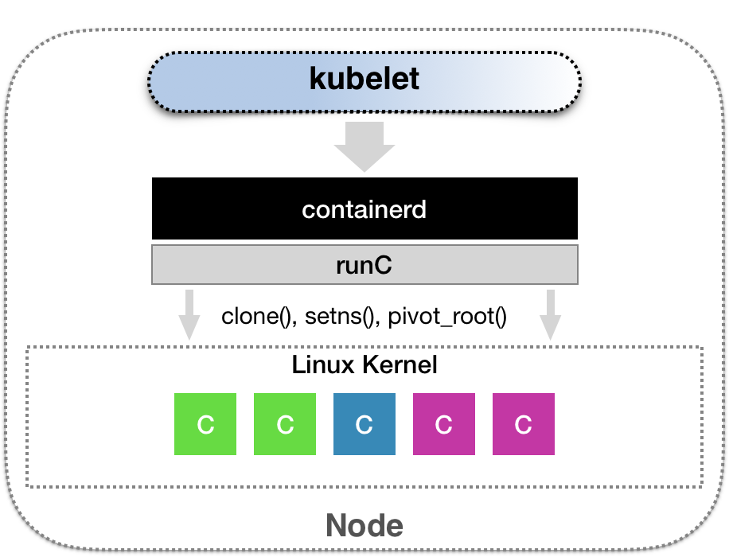
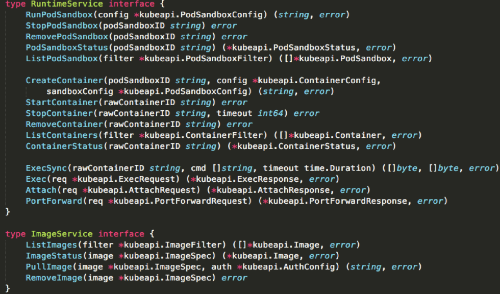
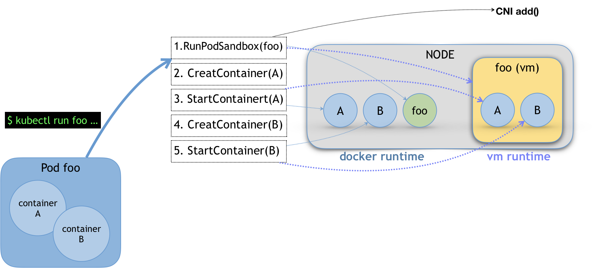
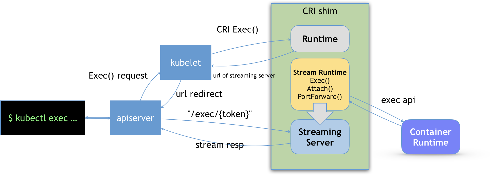

- 00 开篇词 打通“容器技术”的任督二脉.md.html
- 01 预习篇 · 小鲸鱼大事记（一）：初出茅庐.md.html
- 02 预习篇 · 小鲸鱼大事记（二）：崭露头角.md.html
- 03 预习篇 · 小鲸鱼大事记（三）：群雄并起.md.html
- 04 预习篇 · 小鲸鱼大事记（四）：尘埃落定.md.html
- 05 白话容器基础（一）：从进程说开去.md.html
- 06 白话容器基础（二）：隔离与限制.md.html
- 07 白话容器基础（三）：深入理解容器镜像.md.html
- 08 白话容器基础（四）：重新认识Docker容器.md.html
- 09 从容器到容器云：谈谈Kubernetes的本质.md.html
- 10 Kubernetes一键部署利器：kubeadm.md.html
- 11 从0到1：搭建一个完整的Kubernetes集群.md.html
- 12 牛刀小试：我的第一个容器化应用.md.html
- 13 为什么我们需要Pod？.md.html
- 14 深入解析Pod对象（一）：基本概念.md.html
- 15 深入解析Pod对象（二）：使用进阶.md.html
- 16 编排其实很简单：谈谈“控制器”模型.md.html
- 17 经典PaaS的记忆：作业副本与水平扩展.md.html
- 18 深入理解StatefulSet（一）：拓扑状态.md.html
- 19 深入理解StatefulSet（二）：存储状态.md.html
- 20 深入理解StatefulSet（三）：有状态应用实践.md.html
- 21 容器化守护进程的意义：DaemonSet.md.html
- 22 撬动离线业务：Job与CronJob.md.html
- 23 声明式API与Kubernetes编程范式.md.html
- 24 深入解析声明式API（一）：API对象的奥秘.md.html
- 25 深入解析声明式API（二）：编写自定义控制器.md.html
- 26 基于角色的权限控制：RBAC.md.html
- 27 聪明的微创新：Operator工作原理解读.md.html
- 28 PV、PVC、StorageClass，这些到底在说啥？.md.html
- 29 PV、PVC体系是不是多此一举？从本地持久化卷谈起.md.html
- 30 编写自己的存储插件：FlexVolume与CSI.md.html
- 31 容器存储实践：CSI插件编写指南.md.html
- 32 浅谈容器网络.md.html
- 33 深入解析容器跨主机网络.md.html
- 34 Kubernetes网络模型与CNI网络插件.md.html
- 35 解读Kubernetes三层网络方案.md.html
- 36 为什么说Kubernetes只有soft multi-tenancy？.md.html
- 37 找到容器不容易：Service、DNS与服务发现.md.html
- 38 从外界连通Service与Service调试“三板斧”.md.html
- 39 谈谈Service与Ingress.md.html
- 40 Kubernetes的资源模型与资源管理.md.html
- 41 十字路口上的Kubernetes默认调度器.md.html
- 42 Kubernetes默认调度器调度策略解析.md.html
- 43 Kubernetes默认调度器的优先级与抢占机制.md.html
- 44 Kubernetes GPU管理与Device Plugin机制.md.html
- 45 幕后英雄：SIG-Node与CRI.md.html
- 46 解读 CRI 与 容器运行时.md.html
- 47 绝不仅仅是安全：Kata Containers 与 gVisor.md.html
- 48 Prometheus、Metrics Server与Kubernetes监控体系.md.html
- 49 Custom Metrics_ 让Auto Scaling不再“食之无味”.md.html
- 50 让日志无处可逃：容器日志收集与管理.md.html
- 51 谈谈Kubernetes开源社区和未来走向.md.html
- 52 答疑：在问题中解决问题，在思考中产生思考.md.html
- 特别放送 2019 年，容器技术生态会发生些什么？.md.html
- 特别放送 基于 Kubernetes 的云原生应用管理，到底应该怎么做？.md.html
- 结束语 Kubernetes：赢开发者赢天下.md.html
- 捐赠
46 解读 CRI 与 容器运行时
你好，我是张磊。今天我和你分享的主题是：解读 CRI 与 容器运行时。
在上一篇文章中，我为你详细讲解了 kubelet 的工作原理和 CRI 的来龙去脉。在今天这篇文章中，我们就来进一步地、更深入地了解一下 CRI 的设计与工作原理。
首先，我们先来简要回顾一下有了 CRI 之后，Kubernetes 的架构图，如下所示。
- 在上一篇文章中我也提到了，CRI 机制能够发挥作用的核心，就在于每一种容器项目现在都可以自己实现一个 CRI shim，自行对 CRI 请求进行处理。这样，Kubernetes 就有了一个统一的容器抽象层，使得下层容器运行时可以自由地对接进入 Kubernetes 当中。
所以说，这里的 CRI shim，就是容器项目的维护者们自由发挥的“场地”了。而除了 dockershim之外，其他容器运行时的 CRI shim，都是需要额外部署在宿主机上的。
举个例子。CNCF 里的 containerd 项目，就可以提供一个典型的 CRI shim 的能力，即：将Kubernetes 发出的 CRI 请求，转换成对 containerd 的调用，然后创建出 runC 容器。而 runC项目，才是负责执行我们前面讲解过的设置容器 Namespace、Cgroups和chroot 等基础操作的组件。所以，这几层的组合关系，可以用如下所示的示意图来描述。
- 而作为一个 CRI shim，containerd 对 CRI 的具体实现，又是怎样的呢？
我们先来看一下 CRI 这个接口的定义。下面这幅示意图，就展示了 CRI 里主要的待实现接口。
- 具体地说，我们可以把 CRI 分为两组：
第一组，是 RuntimeService。它提供的接口，主要是跟容器相关的操作。比如，创建和启动容器、删除容器、执行 exec 命令等等。
而第二组，则是 ImageService。它提供的接口，主要是容器镜像相关的操作，比如拉取镜像、删除镜像等等。
关于容器镜像的操作比较简单，所以我们就暂且略过。接下来，我主要为你讲解一下RuntimeService部分。
在这一部分，CRI 设计的一个重要原则，就是确保这个接口本身，只关注容器，不关注 Pod。这样做的原因，也很容易理解。
第一，Pod 是 Kubernetes 的编排概念，而不是容器运行时的概念。所以，我们就不能假设所有下层容器项目，都能够暴露出可以直接映射为 Pod 的 API。
第二，如果 CRI 里引入了关于 Pod 的概念，那么接下来只要 Pod API 对象的字段发生变化，那么CRI 就很有可能需要变更。而在 Kubernetes 开发的前期，Pod 对象的变化还是比较频繁的，但对于CRI 这样的标准接口来说，这个变更频率就有点麻烦了。
所以，在 CRI 的设计里，并没有一个直接创建 Pod 或者启动 Pod 的接口。
不过，相信你也已经注意到了，CRI 里还是有一组叫作RunPodSandbox 的接口的。
这个 PodSandbox，对应的并不是 Kubernetes 里的 Pod API 对象，而只是抽取了 Pod 里的一部分与容器运行时相关的字段，比如HostName、DnsConfig、CgroupParent 等。所以说，PodSandbox 这个接口描述的，其实是 Kubernetes 将 Pod 这个概念映射到容器运行时层面所需要的字段，或者说是一个Pod 对象子集。
而作为具体的容器项目，你就需要自己决定如何使用这些字段来实现一个 Kubernetes 期望的 Pod模型。这里的原理，可以用如下所示的示意图来表示清楚。
- 比如，当我们执行 kubectl run 创建了一个名叫 foo 的、包括了 A、B 两个容器的 Pod 之后。这个Pod 的信息最后来到 kubelet，kubelet 就会按照图中所示的顺序来调用 CRI 接口。
在具体的 CRI shim 中，这些接口的实现是可以完全不同的。比如，如果是 Docker 项目，dockershim 就会创建出一个名叫 foo 的 Infra容器（pause 容器），用来“hold”住整个 Pod 的 Network Namespace。
而如果是基于虚拟化技术的容器，比如 Kata Containers 项目，它的 CRI 实现就会直接创建出一个轻量级虚拟机来充当 Pod。
此外，需要注意的是，在 RunPodSandbox 这个接口的实现中，你还需要调用networkPlugin.SetUpPod(…) 来为这个 Sandbox 设置网络。这个 SetUpPod(…) 方法，实际上就在执行 CNI 插件里的add(…) 方法，也就是我在前面为你讲解过的 CNI 插件为 Pod 创建网络，并且把 Infra 容器加入到网络中的操作。
备注：这里，你可以再回顾下第34篇文章《Kubernetes网络模型与CNI网络插件》中的相关内容。
接下来，kubelet 继续调用 CreateContainer 和 StartContainer 接口来创建和启动容器 A、B。对应到 dockershim里，就是直接启动A，B两个 Docker 容器。所以最后，宿主机上会出现三个 Docker 容器组成这一个 Pod。
而如果是 Kata Containers 的话，CreateContainer和StartContainer接口的实现，就只会在前面创建的轻量级虚拟机里创建两个 A、B 容器对应的 Mount Namespace。所以，最后在宿主机上，只会有一个叫作 foo 的轻量级虚拟机在运行。关于像 Kata Containers 或者 gVisor 这种所谓的安全容器项目，我会在下一篇文章中为你详细介绍。
除了上述对容器生命周期的实现之外，CRI shim 还有一个重要的工作，就是如何实现 exec、logs 等接口。这些接口跟前面的操作有一个很大的不同，就是这些gRPC 接口调用期间，kubelet 需要跟容器项目维护一个长连接来传输数据。这种 API，我们就称之为Streaming API。
CRI shim 里对 Streaming API 的实现，依赖于一套独立的 Streaming Server 机制。这一部分原理，可以用如下所示的示意图来为你描述。
- 可以看到，当我们对一个容器执行 kubectl exec 命令的时候，这个请求首先交给 API Server，然后 API Server 就会调用 kubelet 的 Exec API。
这时，kubelet就会调用 CRI 的 Exec 接口，而负责响应这个接口的，自然就是具体的 CRI shim。
但在这一步，CRI shim 并不会直接去调用后端的容器项目（比如 Docker ）来进行处理，而只会返回一个 URL 给 kubelet。这个 URL，就是该 CRI shim 对应的 Streaming Server 的地址和端口。
而 kubelet 在拿到这个 URL 之后，就会把它以 Redirect 的方式返回给 API Server。所以这时候，API Server 就会通过重定向来向 Streaming Server 发起真正的 /exec 请求，与它建立长连接。
当然，这个 Streaming Server 本身，是需要通过使用 SIG-Node 为你维护的 Streaming API 库来实现的。并且，Streaming Server 会在 CRI shim 启动时就一起启动。此外，Stream Server 这一部分具体怎么实现，完全可以由 CRI shim 的维护者自行决定。比如，对于Docker 项目来说，dockershim 就是直接调用 Docker 的 Exec API 来作为实现的。
以上，就是CRI 的设计以及具体的工作原理了。
总结
在本篇文章中，我为你详细解读了 CRI 的设计和具体工作原理，并为你梳理了实现CRI 接口的核心流程。
从这些讲解中不难看出，CRI 这个接口的设计，实际上还是比较宽松的。这就意味着，作为容器项目的维护者，我在实现 CRI 的具体接口时，往往拥有着很高的自由度，这个自由度不仅包括了容器的生命周期管理，也包括了如何将 Pod 映射成为我自己的实现，还包括了如何调用 CNI 插件来为 Pod 设置网络的过程。
所以说，当你对容器这一层有特殊的需求时，我一定优先建议你考虑实现一个自己的 CRI shim ，而不是修改 kubelet 甚至容器项目的代码。这样通过插件的方式定制 Kubernetes 的做法，也是整个 Kubernetes 社区最鼓励和推崇的一个最佳实践。这也正是为什么像 Kata Containers、gVisor 甚至虚拟机这样的“非典型”容器，都可以无缝接入到 Kubernetes 项目里的重要原因。
思考题
请你思考一下，我前面讲解过的Device Plugin 为容器分配的 GPU 信息，是通过 CRI 的哪个接口传递给 dockershim，最后交给 Docker API 的呢？
感谢你的收听，欢迎你给我留言，也欢迎分享给更多的朋友一起阅读。
© 2019 - 2023 Liangliang Lee. Powered by gin and hexo-theme-book.